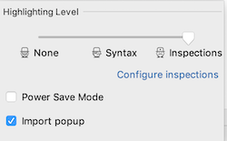
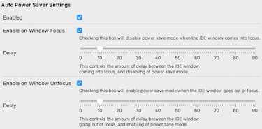

Ever wish your JetBrains IDE was smart enough to turn on/off Power Saver mode automatically when switching into / out of your IDE?

You have the Automatic Power Saver plugin installed - it's just a matter of configuring your preferences:
